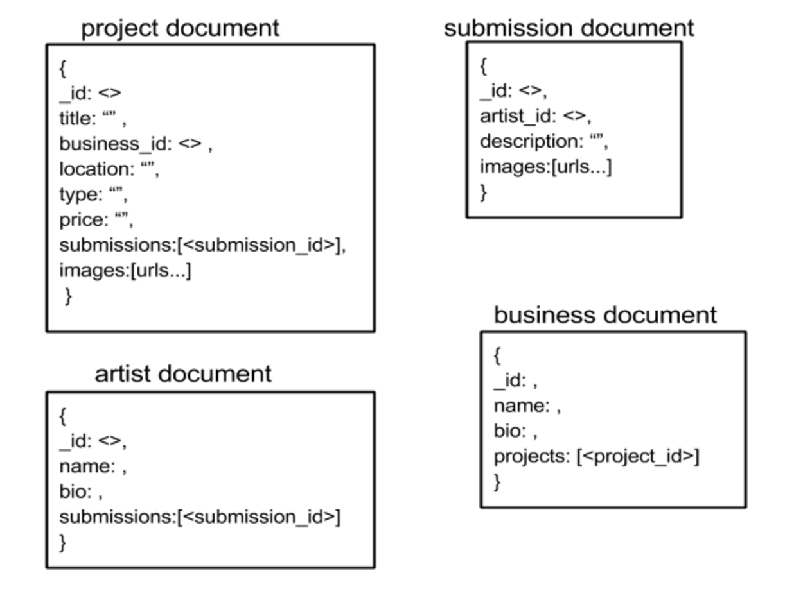
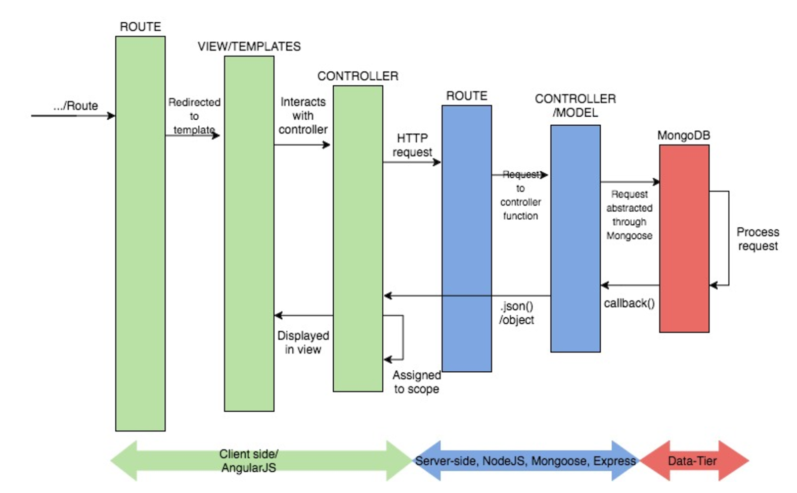

Website Architecture
For this week’s task we began by establishing the main components of our application in order to specify what data is needed where and how they will be connected. The main components we found are:
The project page: Contains all the information about the canvas posted, who posted it and the current submissions.
The submissions page: Specifies a submission for a project. The specification includes the artist and an image of the submission.
The artist profile: Displays information about an artist such as name, contact detail, biography and current or previous submissions.
The business profile: Same as the artist profile however with projects listed rather than submissions.
The canvas browse page: A list with thumbnails of all projects which each contain a project summary.
Using these components as a starting point we started thinking about how a document database model could look like. Below is a normalized data model displaying the four main documents containing the essential data for our MongoDB. The documents are connected using manual references.
When planning the model, we chose to not embed the submissions in the project document but rather give them their own document since we want submissions to be accessible from the artist profile page as well. Therefore embedding would require duplication of data.

For our overall mean stack plan we made decisions such as using Pug for templating because of its clear structure and high performance. The client-side will consist of AngularJS (in addition to bootstrap, HTML, CSS), the server-side of NodeJS, Express and Mongoose, and finally MongoDB to store the data as shown in the model. We will be using Angular to get a single page application by having a consistent index page with partials for displaying the different views.

Finally, a first draft app structure was constructed in order to get an overview of the structure of the app.
|
|